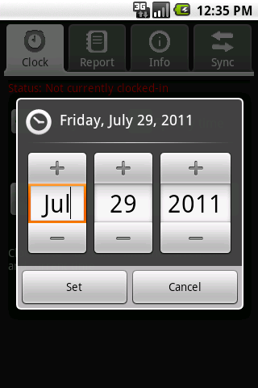

| [ < ] | [ > ] | [ << ] | [ Up ] | [ >> ] | [Top] | [Contents] | [Index] | [ ? ] |
| 5.2.1 Setting the Date and Time | ||
| 5.2.2 Clocking In With Android | ||
| 5.2.3 Clocking Out With Android |
Clocking-in is the process of selecting (or creating) a project and then selecting the Clock In button, and is covered in Clocking In With Android. Clocking-out is the process of clocking out of the currently clocked-in project, along with a description of the clock-activity, covered in Clocking Out With Android. Whether clocking-in or -out, if no date or time is specified, the current device date and time is used. Users can optionally set the date and time for clocking-in and -out, covered in Setting the Date and Time.
Once clocked-in, no other project can be clocked-in - that is, only a clock-out can occur once clocked-in. Likewise, once clocked-out, no other clock-outs can occur until clocked-in again.
| [ < ] | [ > ] | [ << ] | [ Up ] | [ >> ] | [Top] | [Contents] | [Index] | [ ? ] |
Prior to clocking-in or -out, the date and time can be changed. If neither checkbox for date and time is selected, the date and time is specified as the current device time when clocking-in or -out. For example, setting the date but not the time means that when the clock occurs, the device’s time will be used (but not device date). Likewise, not setting both date and time implies that both are obtained from the device date and time when the clock occurs. Setting the date can be useful when a user has forgotten to clock in, or knows when a clock must occur but knows that they’ll not have the device to hand.
Be aware that users are expected to enter valid, meaningful dates. Setting the clock-out time to be earlier than the clock-in time will result in unpredictable behaviour when producing reports.
To set the date, select the Specify date checkbox. A dialog will be presented:
Edit the date as appropriate and select Set to accept the date. To cancel, simply select Cancel. The date will ony ever be used if the Specify date checkbox is set. If Set is selected, the new date will be displayed in the text beneath the button to clock-in or -out. To set the time, select the Specify time checkbox. A dialog will be presented:

Edit the date as appropriate and select Set to accept the time. To cancel, simply select Cancel. The time will ony ever be used if the Specify time checkbox is set. If Set is selected, the new time will be displayed in the text beneath the button to clock-in or -out.
| [ < ] | [ > ] | [ << ] | [ Up ] | [ >> ] | [Top] | [Contents] | [Index] | [ ? ] |
The clock tab, when not clocked-in, has a screen similar to the following:

The clock-in screen contains the following:
Clock-in by selecting the appropriate project from the drop-down list, and then selecting Clock In. Several options are available to clock-in via the drop-down list:
The following image illustrates basic options for the default project, several other projects (Gym and Spanish Course) and the New Project option:

Selecting an existing project will ensure that the currently-selected project is displayed as the next project to clock-in with.
To create a new project, select New Project... from the drop-down list. A dialog will be presented:

Enter the project name then select OK. The new project will be automatically clocked-in. Project names may contain any combination of alpha-numeric characters, spaces and
underscore (_) characters.
Once clocked in, the screen will change. The Clock In button will now say Clock Out, the project drop-down list will disappear and a new checkbox will appear for adding a description.
| [ < ] | [ > ] | [ << ] | [ Up ] | [ >> ] | [Top] | [Contents] | [Index] | [ ? ] |
The clock tab, when clocked-in, has a screen similar to the following:

The clock-in screen contains the following:
To clock out of the current project, click the Clock Out button.
A description can be added when clocking-out. Simply check the Add Description checkbox, then select clock-out. A dialog will be presented offering the opportunity to add a description. To add the description, enter required text then select OK. Clicking Cancel will return the user to the main screen and no clock-out will be performed.
The description checkbox, when selected, will provide a dialog for entering a description.

Select OK to accept the description or Cancel to disregard your changes.
Once clocked out, the screen will change. The Clock Out button will now say Clock In, the project drop-down list will re-appear and the checkbox for adding a description will disappear.
| [ < ] | [ > ] | [ << ] | [ Up ] | [ >> ] |
This document was generated by rich on April 1, 2013 using texi2html 1.82.